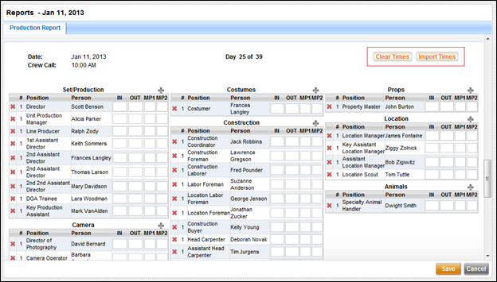
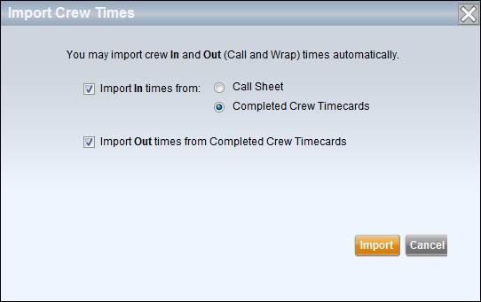

After selecting a report category on the left, use the options on the right to select your report criteria and generate your report. Generated reports appear as .pdf files and are opened in a separate browser window. From that window you can choose to save the report as a pdf file on your local computer or print it to a local printer.
Report options differ depending on which report category is selected. Each is described below.
One mini-tab is available for this category - Lists. Use the following steps to create a report.
1. Select a report style.
Two options are available, a compact report and a more detailed report. The compact report includes each person's name, title, e-mail, and primary phone number. The detailed report also includes their address and non-primary phone numbers.
2. Select who to include.
You can choose to include crew, cast, and non-production staff such as site reps or vendors. If your production contains multiple episodes then you can choose to filter your list to only include people working on the current episode as opposed to listing everyone working on every episode.
3. Select a sort order.
By default the list is ordered by last name. You can choose to sort it by job title instead.
Select the Group by Dept checkbox to group the people according to their department.
4. Click the Generate Report button.
Two mini-tabs are available for this category - Breakdown and Shooting Schedule. Use the following steps to create a report.
The Breakdown mini-tab allows you to generate breakdown pages for each scene.
1. Select which breakdown pages to include.
Each breakdown page represents one or more scenes. You can include all scenes, those scenes from a scheduled date range, or a range of scene numbers.
Note: If you select to print breakdown pages from a scheduled date range, and you have multiple Units, select the Unit schedule you wish to use.
2. Select a sort order.
You can order the pages by scene number or schedule date.
3. Click the Generate Report button.
This mini-tab creates the shooting schedule report.
1. Select which scenes to include.
You can include all scenes, those scenes from a scheduled date range, or a range of scene numbers.
Note: If you select to print the shooting schedule from a scheduled date range, and you have multiple Units, select the Unit schedule you wish to use.
2. Select a sort order.
You can order the pages by schedule date or scene number.
3. Click the Generate Report button.
Note: A typical shooting schedule includes all scenes sorted by schedule date.
Two mini-tabs are available for this category - DooD and Elements.
DooD is short for Day out of Days, a report which shows on which days various elements are required for shooting.
The Element report lists script elements and displays whether or not a production element has been selected for each.
Use the following steps to create a report.
1. If your production or project has multiple Units, select the Unit from which you want to create the DooD report. Because each Unit has its own calendar and strip board, you can generate a separate DooD report for each Unit.
2. Select one or more categories of elements to include.
Use the checkboxes to select various element categories. The Check All and Un-Check All buttons can be used to select or uncheck all categories.
3. Select whether or not to paginate between category types.
Use the Print Options checkbox.
4. Order the items in each category.
You can order the items that appear on the DooD report by either their number of workdays, their start date, or alphabetically by name and cast number.
5. Click the Generate Report button.
1. If your production or project has multiple Units, select the Unit from which you want to create the Element report. Because each Unit has its own calendar and strip board, you can generate a separate Element report for each Unit. Optionally, you can select "All" and the Element report will include elements from the scenes from all Units.
2. Select one or more categories of elements to include.
Use the checkboxes to select various element categories. The Check All and Un-Check All buttons can be used to select or uncheck all categories.
3. Select print options.
Choose whether or not to paginate between category types and if you would like to include the scene numbers in which each element appears.
4. Filter your report to include elements by their selected/not-selected status.
You can include either:
· Script elements that have a selected production element
· Script elements that do not have a selected production element
· Both of the above
5. Order the items in each category.
You can order the items by either the number of times they appear in the script or alphabetically by name and cast number.
6. Click the Generate Report button.
Use the Strip Board category to generate strip board reports. Use the following steps to create a report.
1. Select which strips to include.
Select from the following options:
· Scheduled only
This option includes only the scheduled strip board. Optionally you can select a date range within the scheduled strips.
Note: If you select to print the Strip Board from a scheduled date range, and you have multiple Units, select the Unit schedule you wish to use.
· Unscheduled only
Only unscheduled and omitted strips are included.
· All strips
All strips, both scheduled and unscheduled, are included. You can sort the strips by scene number or schedule, in which case the scheduled strips appear first.
2. Select the strip board style, either thin or thick strips.
Thick strips include the scene synopsis.
3. Click the Generate Report button.
The Call Sheet category allows you to view, edit, and create call sheets. Call sheets that have already been created appear in the right pane Call Sheet List. The call sheet list displays the most up to date call sheet for each day.
The call sheet Archive displays older revisions of each day's call sheets. If on a given day three revisions of a final call sheet were created, the call sheet archive will retain copies of all three. Only copies of call sheets in "final" status are retained.
Use the following steps to create a new call sheet.
1. If your production or project has multiple Units, select the Unit for which you want to create the call sheet. Because each Unit has its own calendar and strip board, you can generate a separate daily call sheet for each Unit.
2. Select the Create button in the upper right corner of the call sheet list.
The Create New Call Sheet popup window appears.
3. Select a date from the calendar and select Save.
The new call sheet appears, populated with the day's scenes, cast, crew, and other information.
4. Select the Save button to save the call sheet.
To view a call sheet, click on the call sheet's date from the call sheet list. If you have multiple Units, ensure that the correct Unit is selected at the top of the list.
At the top of the call sheet is information about the production office, project title, crew call and shooting call times, shooting day and date, sunrise, sunset, and the day's weather. Below that lists the scenes to be shot, including scene title, number, synopsis, cast IDs, day/night indicator, script day, page length, and location. Following that are the cast table, the extras table, special requirements, and then an advance shooting schedule.
At the bottom of the page are fields to list the AD department contacts.
The back page lists call time information for the entire crew. The bottom of the back page contains a space to leave notes.
You can perform the following tasks from the call sheet view:
New call sheets are given a status of preliminary. A preliminary call sheet is not visible to production staff, with the exception of those people with roles that can view preliminary call sheets, such as Assistant Directors. Changes made to a preliminary call sheet do not generate notifications to users.
However, once a call sheet is published its status is promoted to Final. From that moment on, any changes made to the call sheet will trigger notifications to people who have subscribed to call sheet notifications.
You can publish a call sheet by clicking on the Make Final button at the top of the call sheet. A popup window appears prompting you to confirm and select if you would like to notify the production staff of the newly published call sheet.
Click on the Print button at the top of the call sheet screen to generate a .pdf of the call sheet in another browser window. This .pdf can be saved or printed to a local printer.
If you want to view the call sheet in Microsoft Excel, click on the Export button at the top of the call sheet screen. The call sheet is exported to an excel file that you can open and edit.
You can e-mail the call sheet to a production user using the Email button above the call sheet screen. A popup window appears prompting you to select which users you want to include in the e-mail distribution. Click on the + sign to add a user and click on the red x to remove a user. Your own e-mail is included by default.
Click on the Edit button in the upper right to edit the viewed call sheet. The call sheet screen switches to edit mode. While in edit mode, you can make changes to the various tables on the call sheet as well as perform the following tasks:
· Update all Crew Times
Select the Crew Times button to input a call time which is then assigned to all crew members.
· Update all Cast Times
Select the Cast Times button to input a call time which is then assigned to all crew members as their On-Set time. Pickup/report and makeup times are left unchanged.
To delete a call sheet, go to the call sheet list and click on the red x next to the date of the applicable call sheet. A popup window prompts you to confirm.
Warning: Once a call sheet has been deleted, it cannot be restored.
Use the following steps to view call sheet from the archive.
1. Select the Archive mini-tab.
2. Select the shoot date and, if applicable, the Unit for the call sheet.
The archive displays copies of all that day's call sheets in .pdf format.
3. Single click on an icon to open that call sheet.
You can save the .pdf to your computer after it has been opened.
The SAG Exhibit G category allows you to view, edit, and create Exhibit G reports. The SAG Exhibit G is the cast timecard. Exhibit G timecards that have already been created appear in the right pane list.
Use the following steps to create a new Exhibit G.
1. Select the Create button in the upper right corner of the report list.
The Create New SAG Exhibit G popup window appears.
2. Select a date from the calendar and select Save.
The new Exhibit G appears, populated with the cast member names, character roles, and times from the call sheet.
3. Select the Save button to save the report.
To view an existing Exhibit G, click on the date from the Exhibit G report list. You can perform the following tasks from the Exhibit G view:
Newly created Exhibit G reports are given a status of preliminary. Preliminary Exhibit G reports can be edited. When all edits are complete the report is published, which promotes it to Final. Final Exhibit G reports may not be edited.
You can publish an Exhibit G by clicking on the Publish button at the top of the screen.
Click on the Print button at the top of the Exhibit G screen to generate a .pdf of the report in another browser window. This .pdf can be saved or printed to a local printer.
You can e-mail the Exhibit G to a production user using the Send button above the Exhibit G report screen. A popup window appears prompting you to select which users you want to include in the e-mail distribution. Click on the + sign to add a user and click on the red x to remove a user. Your own e-mail is included by default.
Click on the Edit button in the upper right to edit the viewed Exhibit G. The Exhibit G screen switches to edit mode. While in edit mode, you can make changes to the various fields in the header and table of the report.
To delete an Exhibit G report, go to the Exhibit G list and click on the red x next to the date of the applicable Exhibit G. A popup window prompts you to confirm.
Warning: Once an Exhibit G has been deleted, it cannot be restored. It can, however, be created again.
The Production Report category allows you to view, edit, and create daily production reports. Production reports provide daily status of a day's work, including the scenes shot, the film inventory used, and the start and end time for all crew members. Production reports that have already been created appear in the right pane reports list.
Use the following steps to create a new production report.
1. Select the Create button in the upper right corner of the production report list.
The Create New Production Report popup window appears.
2. Select a date from the calendar and select Save.
The new production report appears, populated with the day's information.
3. Select the Save button to save the production report.
To view a production report, click on the report's date from the production report list. You can perform the following tasks from the production report view:
Click on the Edit
button in the upper right to edit the viewed production report. The
production report screen switches to edit mode.
While in edit mode, you can make changes to the various fields and
tables on the report.
The back page of the production report allows you to record crew member In and Out times, as well as the number of meal penalty violations each crew member received.
Lightspeed allows you to import times into the back page of the production report from either the call sheet or from crew member timecards.
While in edit mode, scroll to the back page of the production report until you see the Clear Times and Import Times buttons.
Clear Times & Import Times Buttons

The Clear Times button clears all of the
IN, OUT, and MPV fields on the back of the production report.
The Import Times button allows you to
import IN and OUT times from either the call sheet or timecards.
Import Crew Times

New production reports are given a status of preliminary. A preliminary production report is then completed and submitted, where it can be reviewed and approved by another production member.
Submit a production report by clicking on the Submit button at the top of the production report screen.
Once a production report is submitted it can be approved or rejected. Approved reports are locked and can no longer be edited. Rejected reports go back to preliminary status and may be edited further.
Approve a production report by clicking on the Approve button at the top of the production report screen. Reject a production report by clicking on the Reject button at the top of the production report screen
Click on the Print button at the top of the production report view screen to generate a .pdf of the report in another browser window. This .pdf can be saved or printed to a local printer.
If you want to view the production report in Microsoft Excel, click on the Export button at the top of the production report screen. The report is exported to an excel file that you can open and edit.
You can e-mail the production report to a production user using the Send button above the production report screen. A popup window appears prompting you to select which users you want to include in the e-mail distribution. Click on the + sign to add a user and click on the red x to remove a user. Your own e-mail is included by default.
To delete a production report, go to the production report list and click on the red x next to the date of the applicable report. A popup window prompts you to confirm.
Warning: Once a production report has been deleted, it cannot be restored.
Related Topics